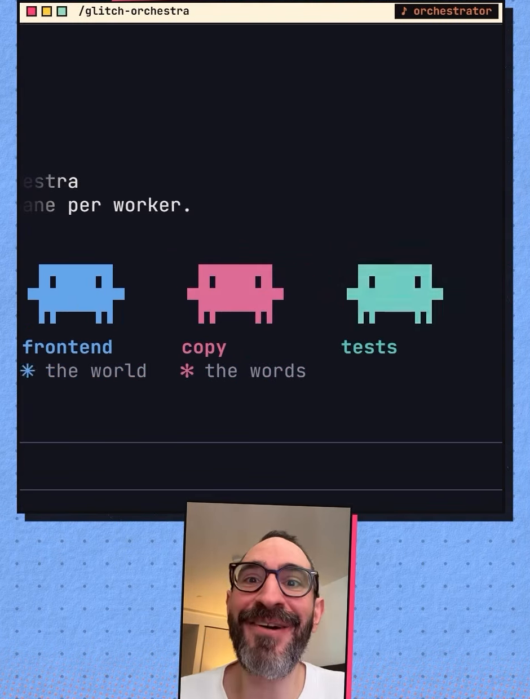
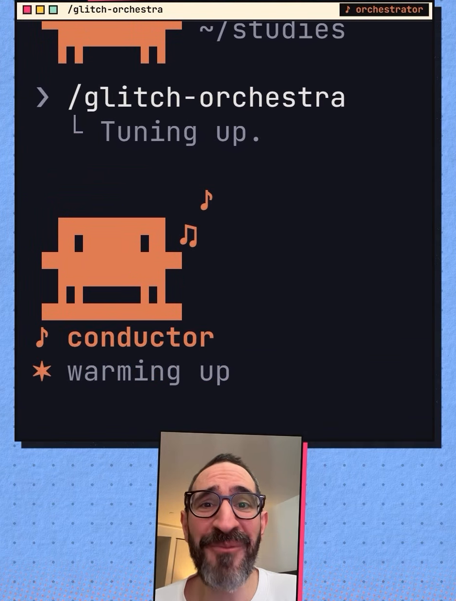
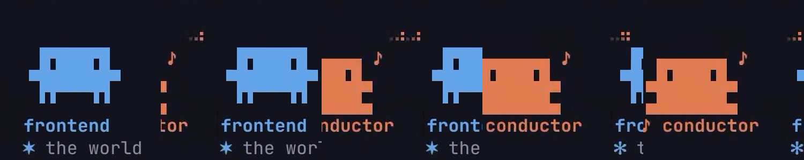
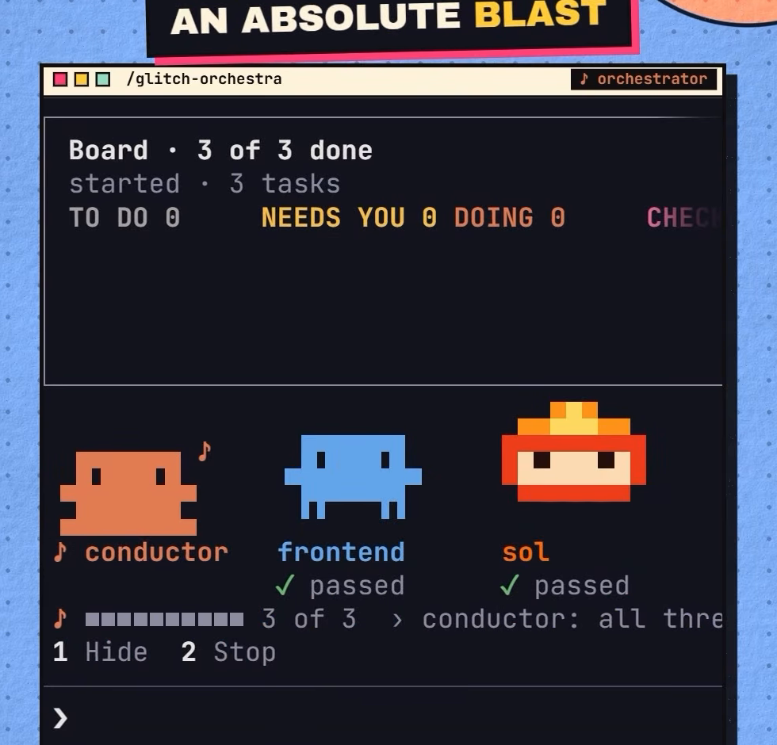
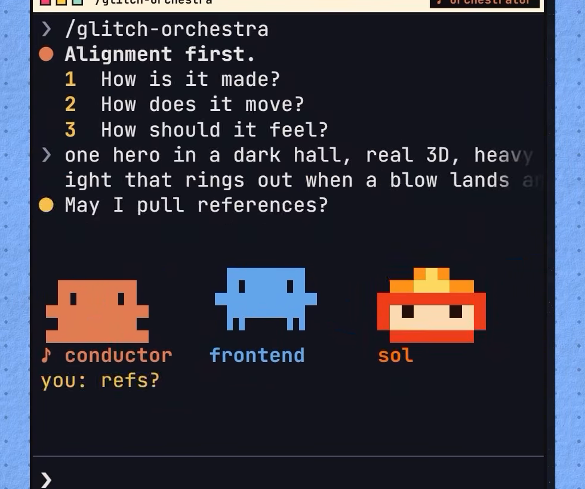

Cream titlebar (#fef2da), black-outlined square dots, dark body (#12131c), coral-on-dark chip, double-ruled bottom prompt bar.
> /glitch-orchestra --design-pack
└ 1-to-1 copy of Kem's Claude Code terminal Orchestra UI.
●Six primitives, strict Fantasque Mono grid, sampled ink & paper, stepped 30 fps sprites.

Cream titlebar (#fef2da), black-outlined square dots, dark body (#12131c), coral-on-dark chip, double-ruled bottom prompt bar.

> /glitch-orchestra, └ Tuning up., coral conductor on 2-row platform with ♪/♫ tells and ✳ warming up.

23-frame floor-rise spawn (759 ms @ 30 fps): height 2→4→6→8→10 rows anchored +2 rows below rest, lifting to REST_ROW = 6 with #f2f3f8 → accent sRGB lerp.

1px bordered Board box, TO DO / NEEDS YOU / DOING / CHECK counts, celebration particles, ✓ passed, ♪ ■■■■■■■■■■ 3 of 3.

Coral ● Alignment first., yellow 1 2 3 questions, yellow ● May I pull references?, conductor + ■ ■ ■ ■ ping + frontend.
Idea: Deadpan terminal UI that moves in discrete pixels. States what was measured, never apologises. Zero web controls — no <button>, <input>, modal, or card-per-bot.
Look: Sampled dark terminal (#12131c) inside a crisp #0a0b10 frame with solid 8px offset shadow and cream #fef2da titlebar. One accent per bot: coral conductor, blue frontend, pink copy, mint tests, yellow attention.
Feel: Strict FantasqueSansM Nerd Font Mono grid, 0px corners, 1px/2px hard rules, 4px spacing ladder, 30 fps stepped motion only.
> win--paper: cream bar, dark frame & 8px shadow
no offset shadow for nested panels
> /glitch-orchestra
└ Tuning up.
●Alignment first.
●May I pull references?
!It stopped. I watched.
chips are inverted labels (never buttons); rules are 1px, 2px, or dashed; meters are discrete cells.
Unified 22×18 grid (PAD_X 3): all 4 bots rest at REST_ROW = 6 (rows 6–15), conductor platform anchored at PLAT_ROW = 16 (rows 16–17). 6-row jump (dy: -6) clears row 0 cleanly. Moods (30 fps): outputting (dual-slot ♪/♫), thinking (1.25px dust band), absorbing (taste blocks + 72% paper flash), aligning (-2.5px star wave), packet (waiting hopper).
> /glitch-orchestra
└ Tuning up.
●Started. A pane per worker.
> Pixels.moods · 5 measured particle systems
●Alignment first.
1How is it made?
2How does it move?
3How should it feel?
●May I pull references?
<link rel="stylesheet" href="tokens.css">
<script src="sprites.js" defer></script>
<div class="stage" id="stage">
<figure class="bot">
<canvas class="sprite" data-sprite="conductor" data-mood="outputting" style="--sprite-scale:7px"></canvas>
<figcaption><div class="bot__name">♪ conductor</div></figcaption>
</figure>
<figure class="bot bot--blue">
<canvas class="sprite" data-sprite="frontend" data-mood="thinking" data-wait-spawn data-stagger-spawn style="--sprite-scale:7px"></canvas>
<figcaption><div class="bot__name">frontend</div></figcaption>
</figure>
</div>
<script>Pixels.staggerSpawn(document.getElementById("stage"), 330);</script>
python3 multimodal/design-pack/scripts/design_pack.py verify \ multimodal/design-pack/looks/glitch-console/
Strict mode fails on any undeclared colour, non-pack font, off-scale font size, radius > 2px, or eased animation.
JS API: Pixels.staggerSpawn(root, 330), Pixels.spawn(c), Pixels.spawnFrame(c, f), Pixels.jump(c), Pixels.setPaused(bool), Pixels.communicate(stage), Pixels.setMood(c, mood), Pixels.cycleMood(root), Pixels.pose(c, pose, scale, mood, step).